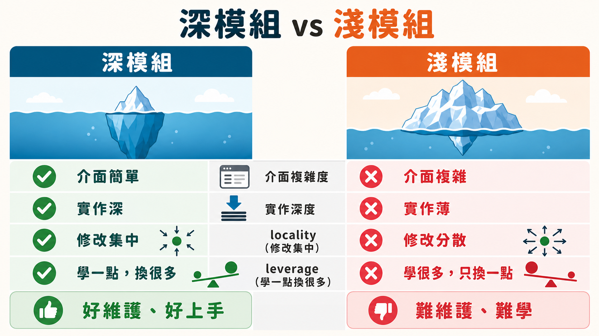

LinkedIn 上滿滿都是「code is cheap」的貼文，執行長們宣稱 AI 讓他們的開發速度前所未有地快。這句話某種程度上是對的，但漏講了另一半：速度快的不只是產出，還有腐爛。
軟體工程裡有個現象叫熵增——每一次你動了程式碼，卻沒有考慮到它與整個系統的關係，就會留下一點點雜訊。一個奇怪的判斷式、一段重複的邏輯、一個沒人記得為什麼存在的分支。單看一次，這些雜訊都無傷大雅。但 AI 把「動程式碼」這件事的成本壓到接近零，於是這個微小的熵增過程被反覆執行了成千上萬次，而且往往是在沒有人類仔細審視全局的狀況下完成的。結果就是，原本要花數年才會累積出的「一大坨爛泥」，現在可能幾個月就達標了。
這不是危言聳聽，而是描述一個結構性事實：AI 擅長的是局部最適化，它會把你交代的那一小塊任務做好，但它不天然具備「這個改動會不會破壞其他模組之間默契」的視野。當這種默契被打破的次數夠多，整個程式碼庫就會進入一種你不敢碰、也看不懂的狀態。
深模組與淺模組：一個決定程式碼庫命運的區分

要談怎麼「解毒」，得先有一套共同的詞彙。這也是作者這次特地在他的 GitHub Skills Repo（目前 4 萬多顆星）裡加了一份術語表的原因——跟 AI 講話用詞不精準，AI 給你的回應也不會精準。
先從「模組」講起。模組就是應用程式裡自成一體的一個單位，可能是一群拼成頁面的 React 元件，可能是負責整個驗證流程的一組函式，也可能只是你選用的 logger。模組彼此溝通靠的是「介面」——呼叫者要正確使用這個模組，所必須知道的一切，不只是方法簽名，還包括那些文件裡才寫得清楚的隱性知識。介面背後藏著的東西叫「實作」，也就是呼叫 sign-in 之後，底層究竟發生了什麼事。
這裡的關鍵區分，借用 John Osterhout《A Philosophy of Software Design》裡的說法：模組可以是「深」的，也可以是「淺」的。深模組用一個很簡單的介面，藏住大量的實作複雜度；淺模組正好相反，介面又臭又長，背後卻沒藏多少東西——換句話說，你花力氣學會怎麼用它，換到的回報少得可憐。TanStack Query 這類做得好的開源函式庫之所以讓人用起來舒服，就是因為它們把極度複雜的快取、重試、去重邏輯，壓縮進了幾個直覺的 hook 裡。
深模組帶來兩個明確的好處。對維護者來說是「locality」——同一件事的修改和 bug 修復，集中在同一個地方，而不是散落在五、六個檔案裡讓你追蹤到崩潰。對使用者來說則是「leverage」——學會一點點介面，換到大量的能力。這兩個字，locality 和 leverage，就是整支影片後面在講的所有改善動作真正瞄準的靶心。
還有兩個概念值得記住：模組之間互相依賴的位置叫「seam」（接縫），這通常就是你寫單元測試或整合測試下刀的地方；而在某個 seam 上，滿足同一介面的具體替代品，叫「adapter」——正式時鐘用真時鐘，測試時換一顆假時鐘，兩者都符合同一個介面，但你不用為了跑測試真的等兩個禮拜。
把術語套進真實程式碼庫：一場人機協作的「刑求」
理論講完，影片進到實戰：作者拿自己那個累積了約 1,500 次 commit、用來錄製教學影片的 React Router + Effect.ts 專案開刀。他形容這個程式碼庫「不算一坨爛泥，但也稱不上完美」——這其實是大多數活著的專案的真實寫照，不是教科書裡的極端案例。
他開了一個新的 Claude session，關掉 auto mode，跑了自己寫的「improved codebase architecture」skill。關掉自動模式這個細節值得留意——因為接下來的流程需要人在關鍵節點插話做判斷，自動模式的「一路衝到底」反而會破壞這種需要停下來對話的節奏。
AI 先自己去程式碼庫裡巡邏，找「可以加深的機會」——說白了就是找淺模組、找 locality 差的地方。這次掃出了六個候選項目，其中一個特別典型：某個概念在前端和後端各有一份平行實作，兩邊沒有共用同一個 seam，於是彼此可能悄悄不同步而沒人發現，因為根本沒有測試守在那個接縫上盯著。這正是淺模組的教科書症狀——介面模糊、實作重複、沒有集中的責任歸屬。
接下來的環節，作者稱之為「grilling」——不是 AI 自動生成方案丟給你選，而是 AI 提出帶著具體程式碼佐證的問題，逼你對每一個設計決策表態：這個模組的介面該長怎樣、TypeScript type 要不要收斂、哪個函式該是對外的入口。這個對話迴圈才是這支 skill 真正的價值所在，而不是它掃出的那份候選清單。作者在影片裡直接示範跳過細節、讓 AI 自己選推薦答案，但也明講了：正常開發時，這幾題他會一題一題認真想過再回答。
這支 skill 存在的意義，恰恰是它拒絕幫你偷懶
這是整支影片裡最誠實的一段自我揭露：這不是一支「你按下去、然後轉頭去喝咖啡」的 AFK skill。它會不斷丟問題回來要求你做判斷，這種設計本身就是一種立場宣告——程式碼庫的長期健康，不能外包給模型自己決定。
作者提出一個分工框架：把 agent 看成戰術層面極其優秀的士兵，能快速衝上前線、搞定眼前的任務；但戰略層面的判斷——什麼樣的改動符合程式碼庫的長遠利益、哪個模組值得重構、犧牲哪邊的複雜度換取哪邊的簡潔——仍然只能由坐在模型上方的人來拍板。skill 的工作是讓士兵去程式碼庫裡巡邏、彙報值得改的地方；但按下「開火」按鈕的，永遠是那個將軍。
這個分工其實回答了一個更大的問題：為什麼「code is cheap」這句話是危險的半真半假。程式碼的生成成本確實趨近於零，但判斷「這段程式碼該不該存在、該長什麼樣子」的成本一分錢都沒有降低——這件事仍然只能靠人類一題一題地問答、一次一次地拍板做出來。AI 加速的是打字，不是判斷。
給正在啃一個爛程式碼庫的人：先建護欄，再談重構
影片收尾談到一個常見提問：怎麼在遺留程式碼庫裡開始用 AI？作者的答案很直白——遺留程式碼庫的本質往往就是「淺模組堆得到處都是」，而在動手改之前，你需要的是一副能接住你改動的護欄，也就是測試。而好的測試，恰恰只能長在好的 seam 上——這又繞回了深模組、locality、leverage 這一整套詞彙。
換句話說，building deep modules 不是一次性專案，而是持續性的例行公事。作者建議每隔幾天就跑一次這支 skill，尤其是變動快速的程式碼庫。每一次深化，換來的不只是可讀性，還有測試能站得住腳的地基——而測試品質越高，agent 未來的產出品質也越高。這形成一個正向循環：好架構餵出好測試，好測試撐住敢讓 AI 大膽下手的信心，而不是每次改動都得屏息以待、祈禱沒有把哪個隱藏的耦合關係弄斷。
程式碼庫的腐爛速度被 AI 調快了，但解法從來不是找一支更聰明的 AI 來對付這個問題，而是回到那些老派的、關於模組邊界與介面設計的軟體工程基本功——只是現在，你有了一個願意跟你來回辯論、逼你把判斷講清楚的對話夥伴。